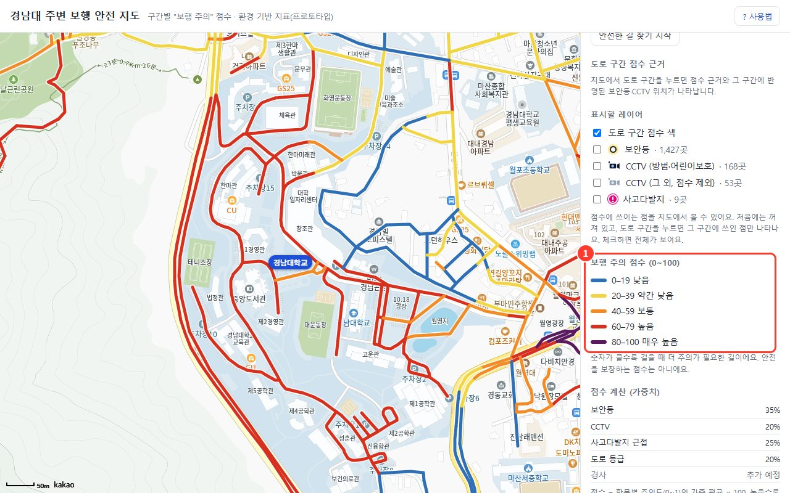

지도 보기
1색은 보행 주의 점수예요
도로의 색이 그 구간의 보행 주의 점수(0~100)예요. 그림의 1 범례에서 단계별 색과 숫자를 볼 수 있어요.
- 파랑·노랑(0~39) 낮음·약간 낮음: 걸을 때 주의가 덜 필요한 길이에요.
- 주황(40~59) 보통
- 빨강·보라(60~100) 높음·매우 높음: 더 주의가 필요한 길이에요.
점수가 높다고 위험한 길이라는 뜻은 아니에요. 보안등·CCTV가 적거나 사고다발지가 가까운 환경이라는 뜻이에요.
